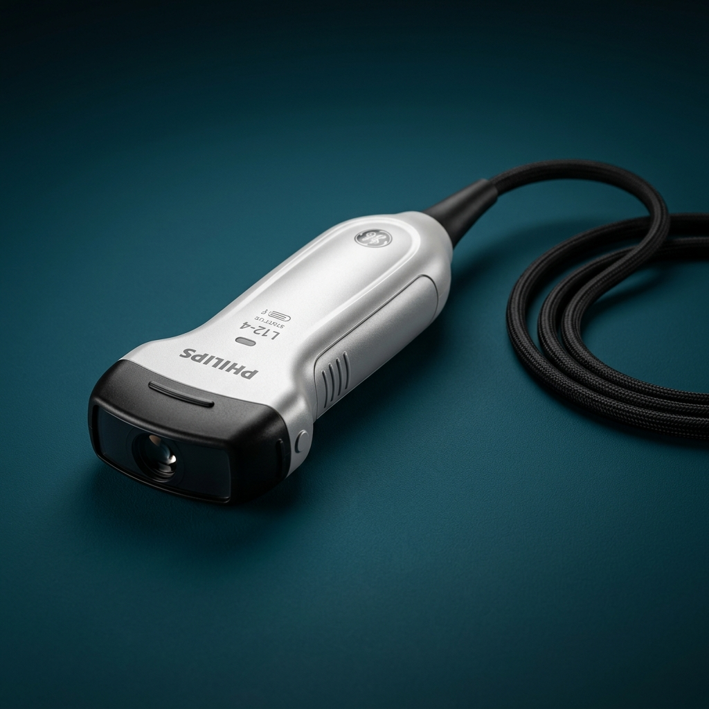

Sonoray Medical Systems has been your trusted partner since 2004. We supply advanced Ultrasound, Digital X-Rays, and Veterinary systems, alongside expert component-level probe repair services.

Trusted by leading healthcare institutions
Providing trusted sales, maintenance, and advanced repair services for clinical and veterinary diagnostics.
Authorised dealers for premium ultrasound and Color Doppler systems from Sonoray and SonoScape.
Expert repair and refurbishment services for all major brands of ultrasound probes and transducers.
Specialised ultrasound scanners and Doppler systems designed specifically for veterinary clinics and animal care.
Reliable after-sales support, preventive maintenance, and expert servicing for your diagnostic equipment.
Over 20 years in medical imaging
Nesapakkam — serving all of India
Sonoray Medical Systems is a Chennai-based medical equipment company established in 2004, specialising in the supply, sales, and service of ultrasound imaging systems. Headquartered at Nesapakkam, Chennai, we have built a strong reputation as a trusted trader and retailer of diagnostic ultrasound machines, ultrasound probes, and related medical equipment across Tamil Nadu and beyond.
We deal in a wide range of products — from portable B&W ultrasound scanners and colour Doppler systems under our own Sonoray DS series, to advanced imaging systems as an authorised dealer for SonoScape. We also offer ultrasound transducer and probe repairing services, making us a one-stop solution for all diagnostic imaging needs.
With over two decades of experience, we deliver unmatched value through premium equipment and dedicated after-sales service.
Established in 2004, we bring 20+ years of deep industry knowledge in diagnostic imaging and medical equipment supply.
Proud authorised dealers for industry-leading brands like SonoScape, ensuring you receive genuine, top-tier clinical systems.
Our specialized technical facility handles complex, component-level repairs for all major brands of ultrasound transducers.
From entry-level portable scanners to flagship 4D Color Doppler trolley systems and specialized veterinary machines.
Our factory-trained service engineers provide rapid response installation, troubleshooting, and preventive maintenance.
We have successfully partnered with hundreds of hospitals, diagnostic centres, and clinics across the region to elevate patient care.
"The image quality rivals systems costing three times as much. The AI measurement feature alone saves our team over an hour every day."
"We deployed Sonoray Lite in 12 rural clinics. The wireless probe and mobile app made it seamless. Our early detection rates have improved significantly."
"Excellent support team. Any technical issue was resolved within hours. The DICOM integration was surprisingly smooth — no IT headaches."
Request a live demo, product trial, or speak with our clinical specialists today.